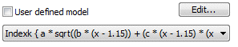
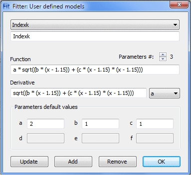
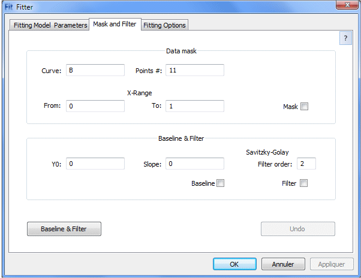
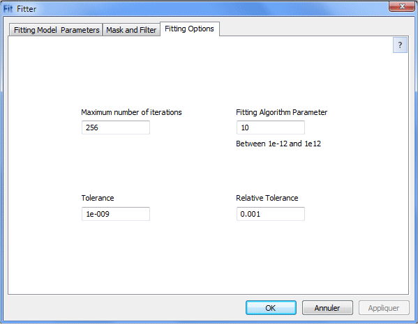

|
||||||
SigmaGraph gives you the fitting functionality you need in order to analyze data (e.g. data obtained from experiment). 24 models are available, including linear, polynomial, exponential, Gaussian (up to 5 peaks), Lorentzian (up to 5 peaks), Pearson VII, logistic, power…
To perform a curve fitting, select the graph and activate the curve (‘Graph Options / Activate’ or right click the curve legend and select ‘Activate’). Then click the ‘Nonlinear Fitting’ toolbar button, or select ‘Fitting/ Nonlinear Fitting’ menu. The fitting dialog appears letting you to select the model, mask or smooth data or set fitting options. The Fitting Model Parameters: you can select the model to use by the fitting algorithm. The model function is shown, with the parameters: a, b, c, …. In order to calculate quickly and precisely the best estimation of these parameters values, the fitting algorithm needs an initial guess. This can be done automatically for some models (Gauss, Lorentz, Pearson VII, Exponential,…). Simply click the ‘Guess’ button. You can select the X fitting interval (by default it’s the same than the data range), and change the fitting number of points (usually few times the data number of points). When done, click the ‘Fit’ button. The fitting curve will be plotted and the parameters values will be printed out on the graph window (if the ‘Show Fitting Report on Graph’ button is checked). You can view the fitting datasheet by clicking the ‘View/Fit Datasheet’ menu or the fitting report by clicking ‘View/Fit Report’. You can also define and use your own fitting models. Click the ‘Edit…’ button to show the user-defined models window: Enter the name of your fitting model;  Define the number of the fitting parameters (between 2 and 6); Enter the fitting function f(x,a,b,…). The fitting parameters are named a, b, c, d, and so on;  Enter the derivative (df/da) expression; Give the parameters default/starting values; Click the ‘Add’ button; Select parameter b and enter the derivative (df/db) expression, and then c, d, and so on. Click the ‘Update’ button to save the fitting model; Click ‘OK’ to close the user-defined models window and return to the fitter main window. Now you can select your fitting model from the list and use it. Mask and Smooth: before performing curve fit, you can mask, smooth and/or subtracting a baseline from the data. To select the fitting range in the data (and then mask the data outside this range), give the start (‘From’) and the end (‘To’) values for X-Range and check the ‘Mask’ button. To smooth the data, enter the smooth order (high number means more smooth) and check the ‘Smooth’ button. To subtract a baseline (y = y0 + slope*x) from the curve, enter the line parameters (y0 and slope) and check the ‘Baseline’ button. When ready, click the ‘Baseline and Smooth’ button to perform calculations.  You can set some fitting algorithm options like the maximum number of iterations, the relative and absolute tolerance… The fitting parameter is an internal number used by the fitter. You can try different value if convergence problem occurred.  |
||||||
|